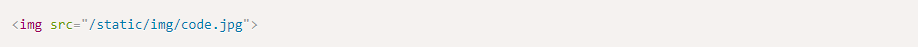
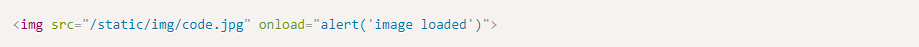
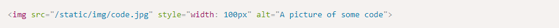
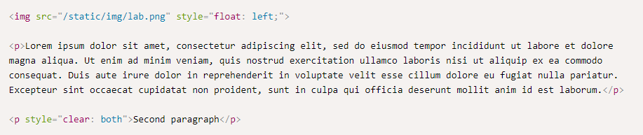

Images
Images in HTML are inline elements that can be placed within a paragraph. To add an image, use the < img >
tag along with the src attribute to specify the location of the image.

You may use JavaScript to trigger an event when an image finished loading.

Resizing the image can be done using the width and height attributes of an image, or alternatively by using CSS:

Having an "alt" attribute set for the image is useful for when an image could not load or when you want to add a
tooltip description that will be displayed when hovering on top of an image.

Image Types
There are three main types of image formats which you should be using.
- Lossless formats - useful for when you need pixel-perfect graphics, for example for logos. The most
common format is PNG. PNG also supports alpha transparency, meaning that you can use any background you
want and overlay the image on top of that background.
-
Lossy formats - useful for displaying rich images. Using a lossless format such as PNG would be an order
of magnitude larger if used in such images. The most common format used in this category is JPG.
-
Animated formats - useful for showing short animated images. The most common format is GIF, although it is
a very old yet widely supported format, with many inherent drawbacks, such as a 256 color limit on each
frame, and bad compression
Using the CSS float attribute with images
Images can be set to float nearby text so they would blend with the text better. Notice the use of the clear CSS
attribute - which directs the browser to break the floating effect after the first paragraph.
